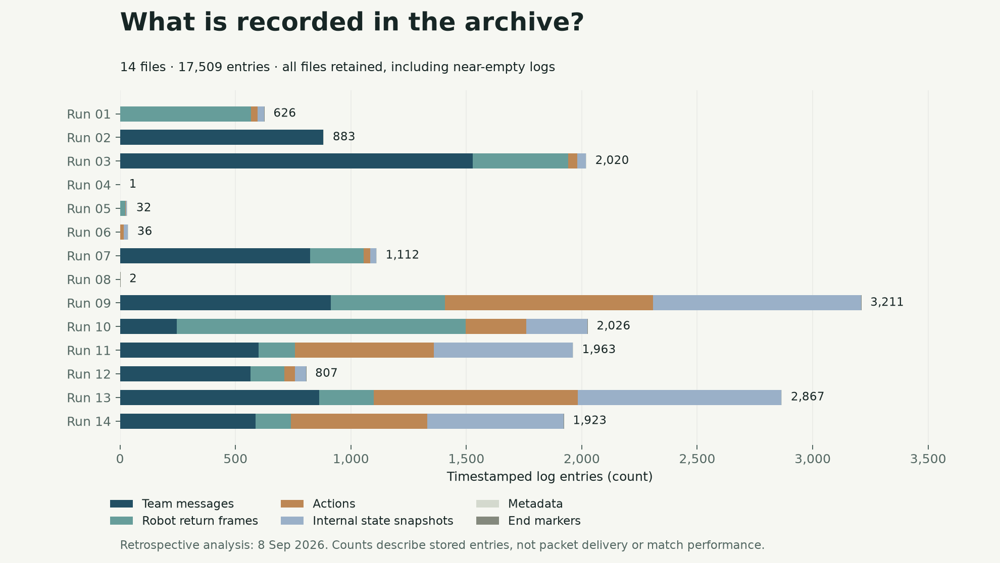
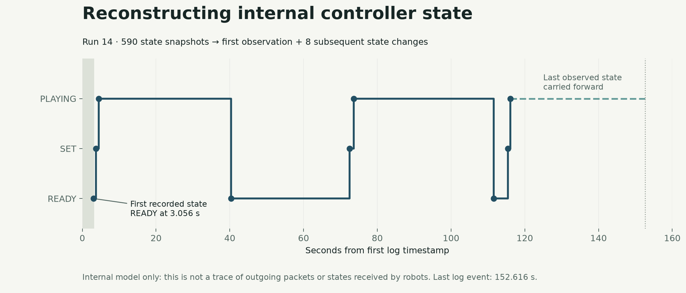

Operations Request & Review Workspace
I led requirements and AI-assisted implementation of a local prototype for turning unstructured requests into confirmed tasks. It brings together a Python HTTP service, a browser interface and SQLite storage.
The prototype includes role-restricted endpoints, signed login sessions, source-linked review fields, human confirmation, task updates and audit records. Its 14-test suite passed in an isolated rerun on 8 September 2026.
HTTP & SQLite
Implemented request, review, confirmation, task, feedback and summary endpoints. Structured storage keeps the original request alongside reviewed fields and subsequent actions.
Permissions & verification
Tests cover database behavior, role restrictions, signed-session checks, rule extraction and confirmation requirements. Review is currently deterministic local logic; a live LLM service and deep ERP integration are outside the implemented scope.
An anonymized local prototype, presented through its implementation and isolated tests.
From event records to a state timeline
A new retrospective analysis of RCAP-era GameController logs, prepared on 8 September 2026. The pipeline classifies custom YAML entries, reconciles totals and separates repeated state snapshots from changes in the recorded state.
{kind=link}

Parsing the archive
Parsed timestamped events; normalized entry types; checked counts against the raw-text structure; checked timestamp ordering; collapsed consecutive identical states into first observations and state changes.
What the records capture
The archive contains 3,401 controller-side gameState snapshots and 3,672 incoming robot statusMessage records. Broadcast reception timing would require synchronized robot-side logs.
{kind=link}

The charts make recorded states and gaps in the archive easier to inspect. Evaluating network reliability or the effect of a software change would require additional instrumentation and controlled trials.
Bitcoin volatility & forecasting methods
I reviewed the analytical design of a collaborative Bitcoin forecasting project, from historical data selection to model evaluation. The methods included GARCH(1,1) volatility estimation and neural-network forecasting.
A methodology map covering data selection, volatility modelling and evaluation review. My contribution focused on analytical design and interpretation.